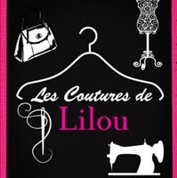
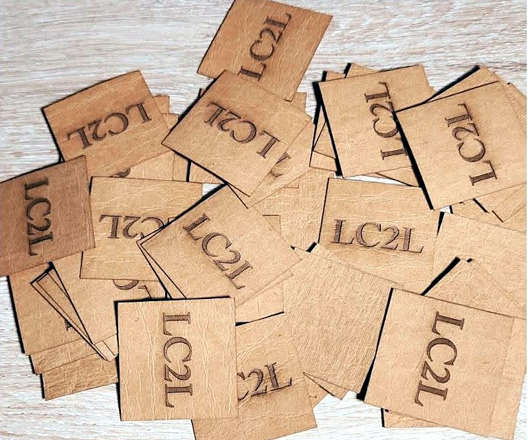
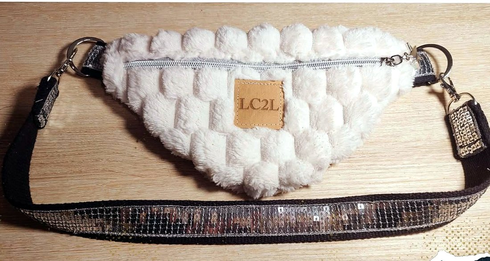
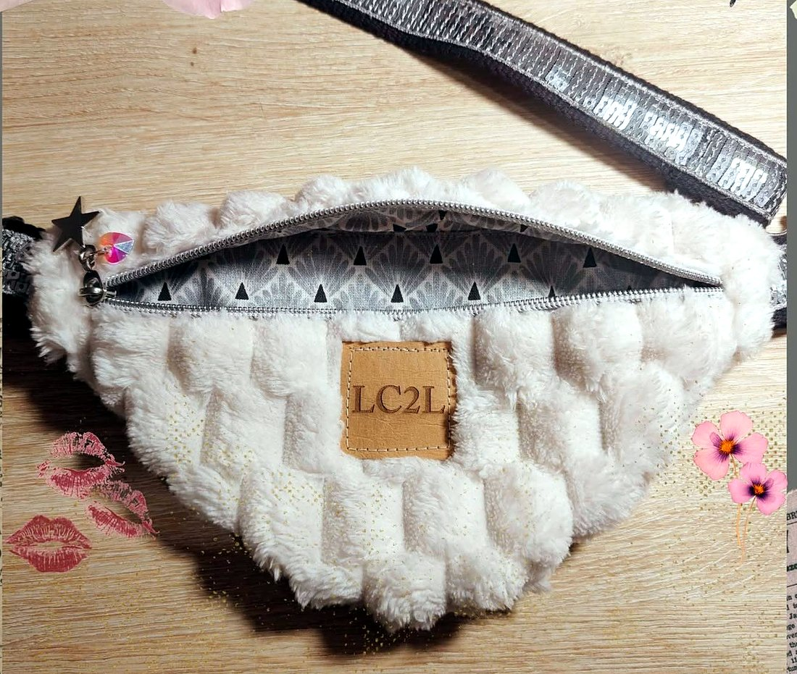
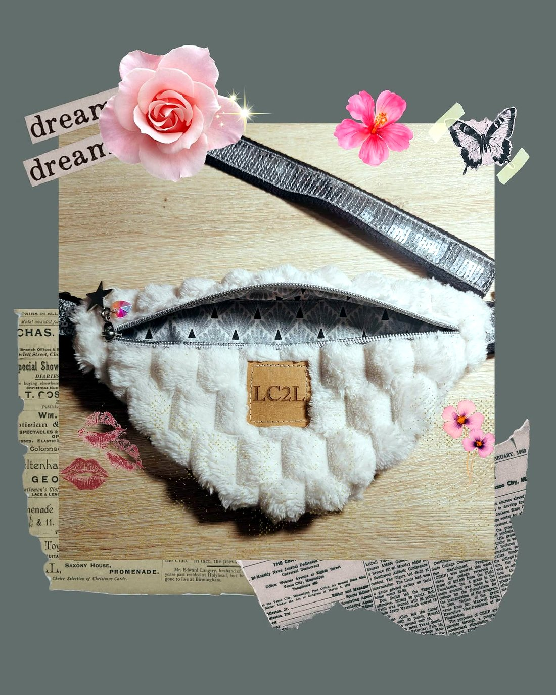
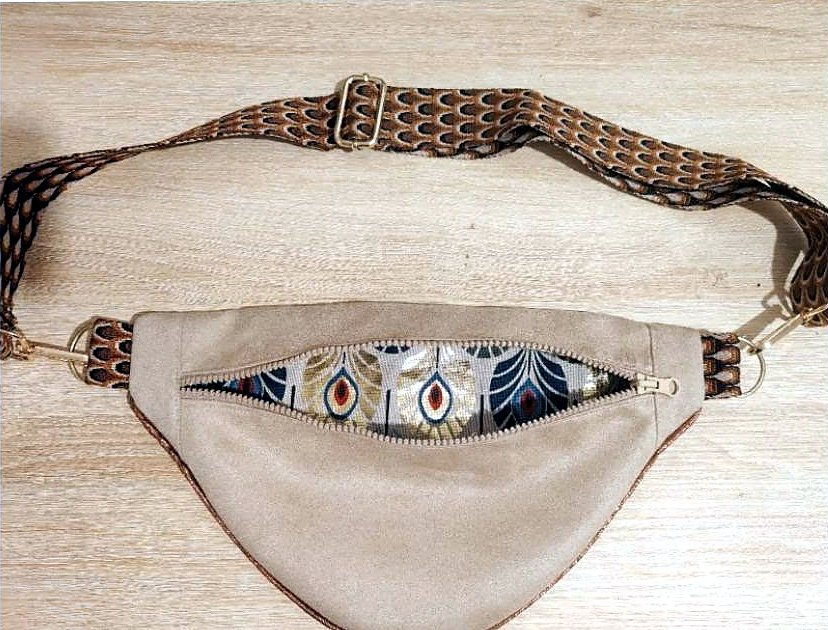
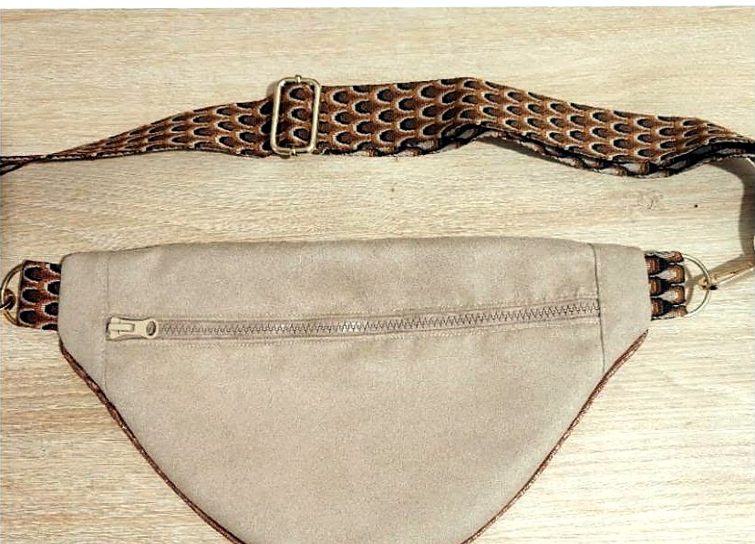
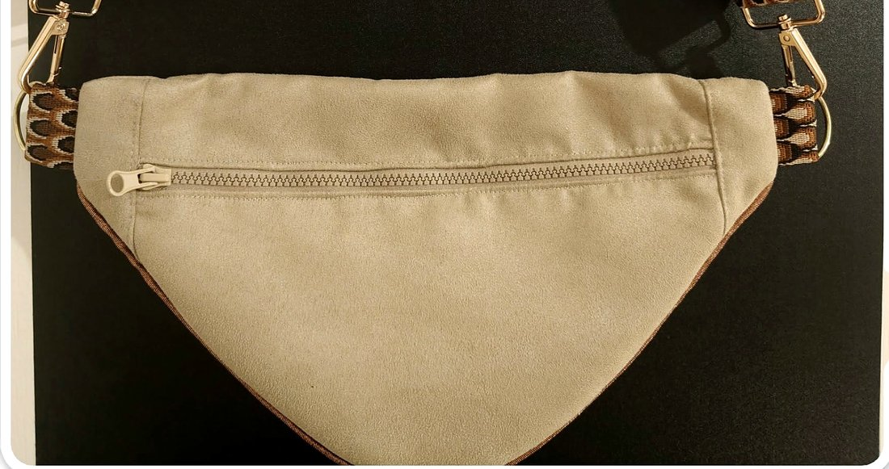

Pantalons & jeans
- Ourlets simples, invisibles, revers ou ourlet d'origine
- Reprise ou agrandissement de taille
- Bas de pantalon, jambe côté et entrejambe
- Pose de fermeture, de bouton, de pression

Couture, retouches & sacs faits mainRetouches, réparations, modifications de vêtements, customisations… et créations de sacs à main signés LC2L, à La Possession.
Un ourlet, une taille à reprendre, une fermeture à remplacer, une déchirure à réparer : l'atelier redonne vie et justesse à vos pièces préférées, du jean au manteau, jusqu'aux rideaux de la maison.
Pour tous renseignements, devis personnalisé, vous pouvez me contacter en message privé ou par téléphone.Les Coutures de Lilou, sur sa page Facebook

« Les étiquettes LC2L viennent d'arriver ! Mes sacs, sacoches etc. porteront fièrement ma marque. J'ai choisi des étiquettes en cuir végan car ce cuir est fabriqué à partir de matériaux recyclés, ce qui est très important à mes yeux et pour la planète. »
Chaque création est pensée dans ses moindres détails : la matière, la doublure, l'anse, jusqu'au mousqueton.






← Glissez du doigt pour voir toutes les créations →
« Les Coutures De Lilou fête sa 7e année sur Facebook ! Merci à vous tous pour votre soutien. »
Publication du 3 juillet 2026
« Couturière au top, je suis entièrement satisfaite. »
Avis d'une cliente, sur la page Facebook